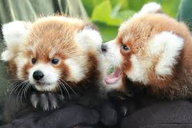
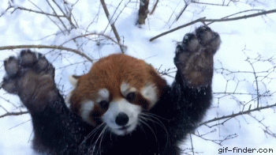

ОписаниеСимпатичный зверь размером с крупного домашнего кота, малая панда полосатым хвостом похожа на енота. За яркую шерсть её называют «огненной лисой», а за повадки — «кошачьим медведем». Последние генетические исследования позволили выделить малую панду в отдельное семейство — пандовые.
Область распространенияОбитает малая панда в юго-восточной части Гималайских гор. Её ареал ограничен провинциями Юньнань и Сычуань в Китае, Бутаном, Непалом и северо-востоком Индии. Зверь предпочитает держаться в высокоствольных лесах, где преобладают хвойные деревья с примесью дуба, каштана, клёна и нижним ярусом из рододендрона и бамбука. Убежища эти животные находят на деревьях, активно используют дупла, часто отдыхают на ветках, лёжа на животе и свесив вниз все четыре лапы.
Внешний видТуловище малой панды удлинённое, длина его 51–64 см, высота в плечах 25 см, шерсть густая, мягкая, гладкая и очень длинная. Пушистый хвост также длинный, причем его длина у разных зверьков значительно варьирует: от 28 до 48 см. Уши маленькие, округлые, глаза тоже невелики. Лапы короткие, крепкие, пальцы снабжены сильно загнутыми полувтяжными когтями, которые помогают панде легко забираться на деревья и спускаться с них. Окраска шерсти малой панды рыжая или ореховая, снизу тёмная, рыжевато-коричневая или чёрная. У волос на спине жёлтые кончики. Лапы глянцевито-чёрные, хвост рыжий, с более светлыми узкими кольцами, голова светлая, причём края ушей и мордочка почти белые, а около глаз рисунок в виде маски, как у енотов, причём этот рисунок уникален для каждой отдельной особи. Самцы и самки одинакового размера, животные могут весить от 3,7 до 6, 2 кг.
Образ жизниБольшую часть жизни панды проводят в одиночестве. Участки самок около 2,5 кв. км, самцов — вдвое больше. Самец малой панды яростно защищает свою территорию. В случае появления соперника он начинает громко шипеть. Перед атакой противники поднимают головы и выразительно «кивают» ими. Если ни один из них не испугался предупреждения, то происходит яростная схватка. Вне сезона размножения взрослые панды редко общаются друг с другом. Автор статьи: Рахманов Д.О.Опубликовано: 13.10.2020